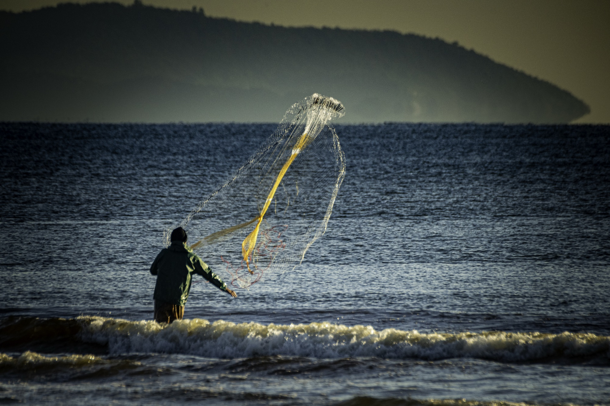
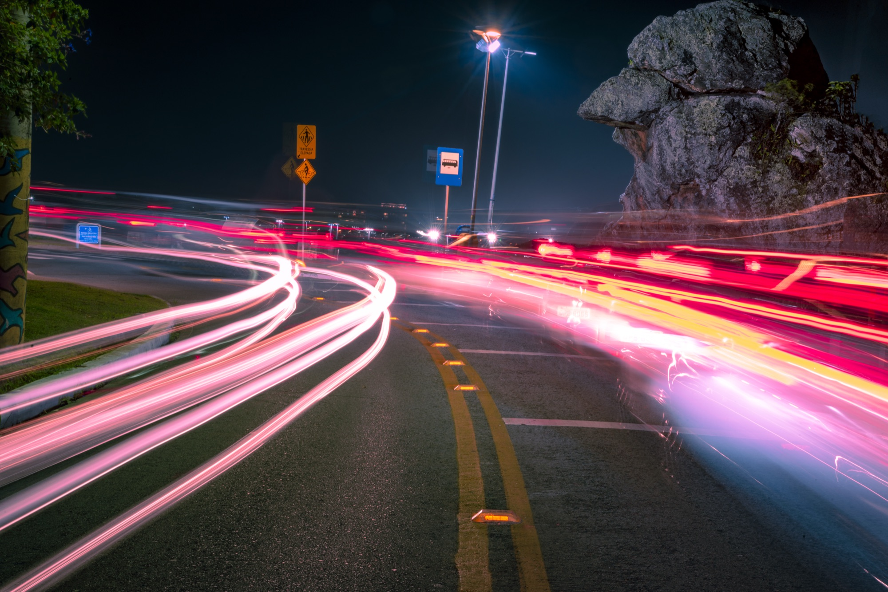

Memórias de Gigantes
Os navios que cruzam o Porto de Itajaí, retratados na escala e no silêncio que só a maré permite ver.

Guerreiros do Mar
Homens, redes e rotina — o retrato de quem sustenta a cidade com as próprias mãos, dia após dia.
Sentinela de Pedra
Uma pedra que observa o mar há gerações, guardando o segredo de quem só o silêncio consegue ouvir.
Paisagens Peixeiras
Onde o céu encontra o mar e o horizonte parece não ter fim — um convite para respirar.

Experiência Imersiva
Galer.iA
Deixe a inteligência artificial escrever, na voz do Alfa, o poema que só o seu olhar poderia inspirar.